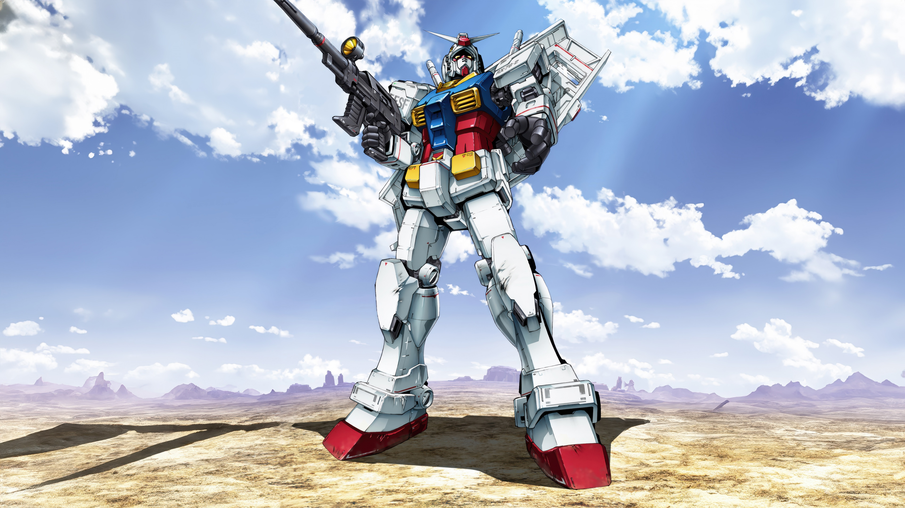
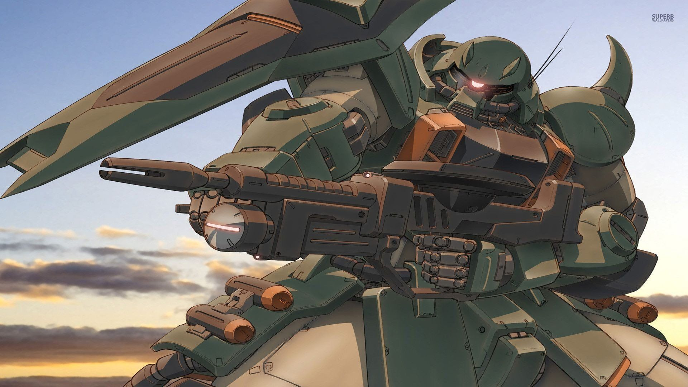

Berdasarkan
Skala Produksi
Mobile suit diproduksi dengan tujuan dan skala yang berbeda-beda, mulai dari unit prototype yang eksperimental hingga unit yang diproduksi secara massal untuk kebutuhan jumlah prajurit di medan perang terbuka.
Prototype
Unit ini adalah bahan eksperimental yang dibuat untuk menguji teknologi baru. Unit ini biasanya memiliki spesifikiasi paling tinggi karena menggunakan teknologi lebih canggih dan material yang lebih mahal. Contohnya seperti RX 78-2 Gundam dan Strike Gundam.

Mass Production
Unit ini digunakan sebagai prajurit dalam perang. Biasanya spesifikasinya jauh dibawah unit prototype dan jumlahnya sangat banyak karena produksi massal. Contohnya adalah MS-06 ZAKU II dan RGM-79 GM.

Custom
Unit Custom adalah unit mobile suit yang dimodifikasi khusus untuk pilotnya. Biasanya, unit ini memiliki keunggulan tersendiri sesuai dengan kemampuan pilotnya. Ditandai dengan warna yang unik dan ada banyak teknologi tambahan untuk membantu dalam perang. Contohnya adalah Char's Custom Zaku II (Zaku Red Comet).
Berdasarkan
Fungsi
Selain dari skala produksinya, Mobile Suit juga dikategorikan berdasarkan peran dan fungsinya di medan tempur. Spesialisasi ini sangat memengaruhi desain struktur armor, tingkat mobilitas, serta persenjataan yang digunakan oleh unit tersebut.
General
Unit yang dirancang untuk pertempuran Jarak dekat ataupun menengah. Bisa beroperasi dengan baik di bawah gravitasi Bumi maupun di luar angkasa. Mayoritas Gundam utama masuk ke kategori ini.
Close Combat
Fokus pada mobilitas ekstrem dan senjata melee (seperti pedang, beam saber, atau gada). Armor pelindungnya sengaja dibuat lebih ringan dan minimalis agar pergerakannya lincah dan tidak menghalangi rotasi sendi. (Contoh: Gundam Exia, Gundam Barbatos).
Artillery
Mengorbankan kelincahan demi membawa meriam besar, peluru kendali, atau sniper rifle bertenaga tinggi. Biasanya memiliki armor yang sangat tebal dan ditempatkan di garis belakang pertahanan. (Contoh: Guntank, Gundam Dynames).
Amphibious
Dirancang khusus untuk beroperasi di bawah tekanan air laut. Memiliki bentuk yang lebih melengkung (streamline) untuk mengurangi hambatan air (misalnya cakar fisik atau torpedo). Contohnya seperti MSM-07 Z'Gok.
High-mobility
Dikhususkan untuk ruang hampa udara seperti ruang angkasa dengan tambahan thruster berukuran besar di punggung atau kaki. Jika dipaksa beroperasi di Bumi, unit ini biasanya kesulitan berjalan normal karena bobot peralatannya terlalu berat. (Contoh: Rick Dom, Sinanju).
Transformable MS
Unit canggih yang memiliki mekanisme transformasi fisik menjadi mode pesawat tempur (sering disebut Waverider mode). Transformasi ini memungkinkan mereka terbang menembus atmosfer Bumi secara mandiri atau menjelajah jarak jauh dengan sangat cepat.